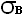
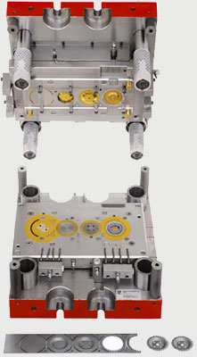
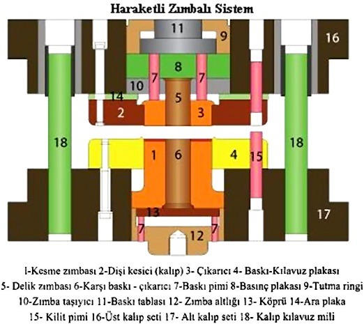
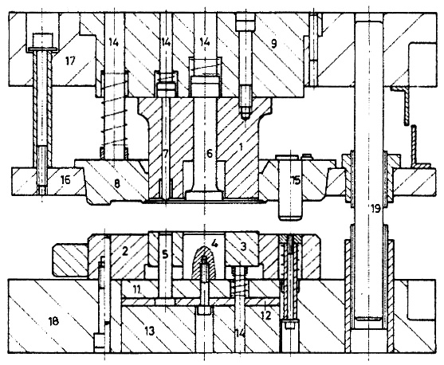

Hassas kesmede birbirinden baðýmsýz olarak çalýþan üç ayrý kuvvet vardýr (1). Bu kuvvetler kesme öncesi (PR) çökertme kuvveti, (PG) karþý baský kuvveti ve (PS) kesme kuvvetidir. Kalýbýn açýlmasýndan sonra (PGA) çýkarma kuvveti ve (PRA) sýyýrma kuvveti devreye girer (4).
PS = L . s ..f(kg) L: Kesilen iç ve dýþ toplam uzunluk (mm) s : Malzeme kalýnlýðý (mm)
: Malzemenin çekme mukavemeti (kg/mm²) f: Kesme gerilimi ve çekme mukavemeti arasýndaki oranýna baðlý katsayýsý 0,6 - 0,9 arasýdýr.
Çökertme kuvveti bütün kesme iþlemi boyunca malzemeye kýlavuz plaka tarafýndan uygulanmaktadýr. Kuvvet kesme iþlemi baþlamadan malzemeye uygulanmakta, kesme bitene kadar devam etmektedir (2).
PR = k . LR . h . (kg) k: katsayý yaklaþýk olarak 3 - 4 arasýnda alýnabilir. LR: Çökertme uzunluðu (mm) h: Çökertme çenesi yüksekliði (mm)
Karþý baský kuvvetinin görevi kesme esnasýnda malzemeyi kesme zýmbasýna yapýþýk tutarak düzgün kesilmesini saðlamaktýr. Kesilen yüzey büyüklüðüne ve spesifik karþý baský kuvvetine baðlýdýr (4).
Kesme olayýndan sonra çökertme kuvveti þeridi zýmbadan sýyýrma, karþý baský kuvvet de kesilen pulu dýþarý itmeye yarar. Bu kuvvetler kesme kuvvetinin %15'i kadar alýnabilir. Bu deðer karmaþýk dýþ formu ve pek çok deliði olan parçalarda kullanýlýr. Basit þekilli parçalarda %10 deðeri kullanýlabilir (4).
PRA = PGA = (0,1 . 0,15) . PS (kg)
Hassas kesme gerilim simülasyonu
(The movie shows the evolution of the equivalent stress
and the stress triaxiality in the region where the cut is made)
(www.mate.tue.nl/mate/research/index.php/7#sec2)
2.3 Hassas kesme ve þekillendirmede tasarým kurallarý:

Þekil 7. Hassas kesme ve þekillendirme progresif kalýbý
Hassas kesme yöntemi ile üretilecek parçalarýn tasarýmlarýnda uygulanacak hassas kesme teknolojisinin saðlayabileceði sýnýrlara dikkat edilmelidir. Malzemenin þekillenebilirlik yeteneði, takým dayaným sýnýrlarý, operasyonel zorluklar, bunlarýn getireceði ilave iþlemler ve masraflar göz önünde bulundurulmalýdýr (4).
Hassas kesme kalýplarýnda ömür esas olarak kesilen malzeme cinsine, kalýnlýðýna, kullanýlan presin ve kalýbýn kalitesine baðlýdýr. Genellikle zýmba, kesme kalýbýna oranla üç kat daha fazla aþýnýr. Bundan dolayý keskin kenarlý parçalardan kaçýnýlmalýdýr. Parçanýn köþe kavisi ne kadar büyükse, kesilen yüzey o kadar temiz olur. Dik açýlý parçalarda köþe kavisleri %10s deðerinden daha küçük yapýlmamalýdýr. Parçada bulunan delik ve yarýklarýn parça kenarýna uzaklýðý en az %60s kadar yapýlmalýdýr. Delik çaplarý ve yarýk ölçüleri sac kalýnlýðýnýn %60'ýndan daha küçük tutulmamalýdýr. Hassas kesme yöntemiyle üretilecek diþli çarklarda diþ geniþliði en az %60 malzeme kalýnlýðý kadardýr. Kesme sonrasý % (10.25) s kadar köþe kavisinin meydana geleceði dikkate alýnmalýdýr (1).
Hassas kesme kalýplarý hareketli ve sabit zýmbalý olmak üzere iki ayrý tipte yapýlmaktadýr. Sabit zýmbalý kalýp sistemi büyük yüzeyli, kalýn ve üzerinde fazla sayýda delik bulunan parçalar için kullanýlmaktadýr. Hareketli zýmbalý kalýp sistemi de küçük ve orta boyutlu parçalar için uygundur. Hareketli kalýp sisteminde kesme zýmbasýnýn kesme yönünde en az kesme yolu kadar hareket etmesi saðlanmýþtýr. Hareketli kalýp sisteminde kesme zýmbasýnýn yanal hareket yapmadan kesme yönünde hareketinin saðlanmasý bu tipin bir kusuru olarak gösterilebilir. Sabit zýmbalý tipte zýmba kalýba vidalandýðýndan çok daha kuvvetli bir yapý saðlanabilir (1).
Hassas kesme sýrasýnda oluþan kuvvetler, konvansiyonel kesme sýrasýnda oluþan kuvvetlerin 1.5 - 2.5 katý arasýndadýr. Bu sebepten dolayý kalýp elemanlarý saðlam ve dayanýmý yüksek olmalýdýr. Hassas kesmede zýmba ve diþi plaka için yüksek karbonlu yüksek kromlu takým çelikleri, ayrýca yüksek karbonlu yüksek hýz çelikleri veya bazen de tungsten karbür kullanýlmaktadýr. Zýmba ve diþi plaka sertlikleri ise 60 - 62 HRC arasýndadýr (2).

Þekil 8. Hareketli zýmbalý (yukarýda) ve sabit zýmbalý (aþaðýda) hassas kesme kalýp sistemleri.

Hassas kesilen malzemelerin iyi akma ve iyi soðuk þekillendirilme özellikleri olmalýdýr. Hassas kesmede genellikle çelik türü malzemeler kullanýlýr. Fakat bakýr ve bakýr alaþýmlarý ile alüminyum ve alüminyum alaþýmlarý da gün geçtikçe artan oranlarda kullanýlmaktadýr (4).
Çelikte iyi yüzey kalitesi ve uzun takým ömrü için kopma dayanýmý 30-60 kg/mm2 arasýnda olmasý uygun olur. Kurþunsuz pirinç malzemeler içinde çinko miktarý %37'yi geçmeyenler, iyi þekillenme özelliklerine sahip olduklarýndan hassas kesme için uygundur. Alüminyumda kopma dayanýmý 25 kg/mm2'yi geçmeyenler genel olarak iyi yüzey kalitesi verirler (1).
Hassas kesme kuru olarak yapýlamaz. Yetersiz yaðlama kesilen malzemenin zýmba ve kalýba soðuk kaynak olarak yapýþmasýna sebep olur. Bu yüzden malzeme cinsine ve kalýnlýðýna baðlý olarak hassas kesme yaðý belirlenmeli ve yaðlama aktif olarak yapýlmalýdýr (4).
Kesme esnasýndaki sürtünmeler ýsý oluþumuna sebep olur. Kesicilerin sýcaklýðý yükselir zýmbanýn aþýnmasý artar. Zýmbanýn kullaným ömrünü artýrmak için zýmbanýn basýnçlý hava ile soðutulmasý gerekir. Uygun düzenlenmiþ hava kanallarý ile basýnçlý hava üflenerek zýmba soðutulur. Basýnçlý havanýn korozyon etkisi göstermemesi için içine yað katýlmasý uygun olur. Çýkarýcý aralýklarýndan üflenen basýnçlý hava ayný zamanda atýk pullarýn zýmbadan uzaklaþtýrýlmasýna da yardýmcý olur (4).
3. Sonuç ve irdeleme:
Hassas kesme tekniði birçok alanda çeþitli parçalarýn üretilmesinde kullanýlan, konvansiyonel kesmeye göre daha pahalý ve yapýmý daha zor olan bir seri imalat þeklidir. Bu yüzden parçalarýn kullaným yerlerine göre hassas kesmenin gerekip gerekmediði ve maliyeti diðer yöntemlerle karþýlaþtýrýlýp uygunluðu belirlenmelidir.
Hassas kesme kalýplarýndan istenen verimi alabilmek için parça tasarým kurallarýna uyulmalý, hassas kesmeye uygun malzeme seçilmeli, aktif olarak yaðlama ve soðutma yapýlmalý, uygun bir hassas kesme presi kullanýlmalý ve parça basým sayýsýna göre uygun çelik malzemesi seçilip düzgün bir kalýp tasarýmý yapýlmalýdýr.
Kaynaklar:
1. GÜNEÞ A.T., Hassas Kesme, Mühendis ve Makina Dergisi, 26, 301, 11-14, 1985,
2. DARICI Ü. B., Hassas Kesme ve Kalýplarý, Ýstanbul Teknik Üniversitesi Fen Bilimleri Enstitüsü Yüksek Lisans Tezi, Ýstanbul, 1998.
3. KARAMAN, M., Hassas Kesme Kalýplarýnda Kesme Olayýný Etkileyen Faktörlerin Ýncelenmesi, Sakarya Üniversitesi Fen Bilimleri Enstitüsü Yüksek Lisans Tezi, Sakarya, 1999.
4. GÜNEÞ, A.T., Pres Ýþleri Tekniði, Cilt 3,14-137, MMO, Ankara, 2003.
5. www.partechfineblanking.com > Partech Corporation, Minneapolis, Minnesota, USA
6. www.fineblanking.org > Fineblanking (Precision Resource Corp., Shelton, CT, USA, 2000)
7. www.ise.polyu.edu.hk/fine_blank/information.html > The Fine-Blanking Technology
8. J.Mediavilla, R.H.J. Peerlings,
M.G.D. Geers, Fine-blanking animation (2.68 Mb) www.mate.tue.nl/mate/research/index.php/7#sec2